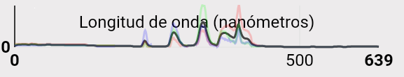
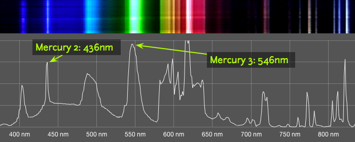
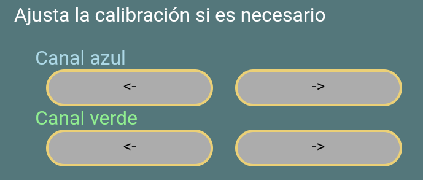
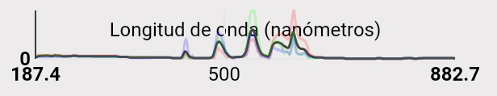

Calibrado CFL:
Cuando cargues una imagen en la aplicación te darás cuenta de que las gráficas que obtienes tienen una escala en nanómetros (nm) en el eje horizontal. Para obtener datos a escala es necesario calibrar tu espectrofotómetro: Hablamos de calibración de longitud de onda.
Cuando miras la gráfica de un espectro ves una representación gráfica de las intensidades de cada color a lo largo del espectro, pero la primera vez que lo hagas, no verás el eje horizontal escalado correctamente. Esto sucede porque trabajamos con imágenes cargadas desde el móvil y no sabemos exactamente qué pixel de la imagen corresponde a cada frecuencia de luz.
Una lámpara fluorescente (CFL) contiene vapor de mercurio que, cuando se enciende, emite un espectro característico con picos muy pronunciados. Estos picos siempre ocurren en las mismas longitudes de onda, así que podemos reconocerlos por color y orden y usar esta información para calibrar el eje horizontal.
Los picos que buscamos son los siguientes:
La Linea mercury 2 - "B2" a ~435.8 nm
La Linea mercury 3 - "G2" a ~546.1 nm
Los pasos a seguir son los siguientes:
Si aún no tienes una imagen de un espectro CFL selecciona el icono de la cámara en el menú principal.
Ilumina el espectrofotómetro con una luz fluorescente. Si hay mucha sobreexposición prueba a iluminar una hoja de papel o una pared blanca y apuntar ahí tu espectrofotómetro.
Selecciona "Calibración CFL" en el menú principal y abre tu espectro de CFL con el botón "Abrir de galería".
Una vez cargada la gráfica la app te mostrará los picos del canal verde y azul que considere que son los mencionados "B2" y "G2"
En caso de no ser esos utiliza las flechas que aparecen bajo la gráfica para seleccionarlos. Podrás ver los que seleccionas en la imagen del espectro.
Una vez seleccionados "B2" y "G2" pulsa "Calibrar".
Cuando la gráfica se actualice podrás ver el eje horizontal correctamente calibrado.
Tu calibración se guarda para posteriores usos de la aplicación. En caso de querer calibrar de nuevo el espectrofotómetro, realiza de nuevo estos pasos o selecciona el botón "Reset" para volver al estado inicial de calibración.